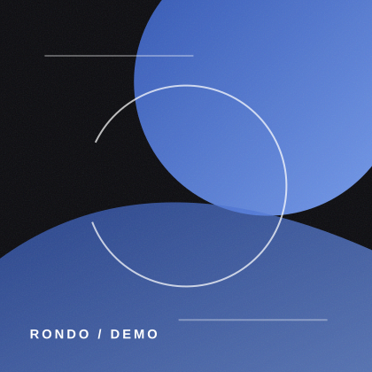
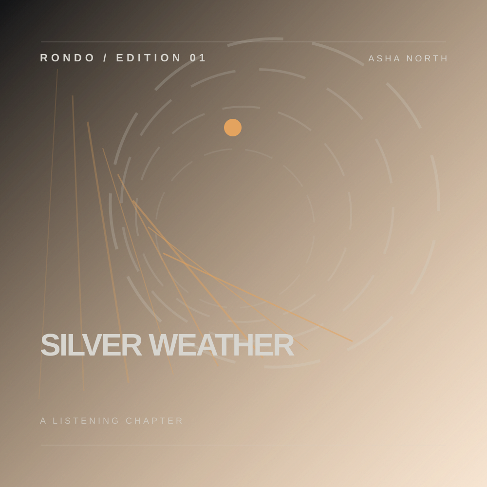
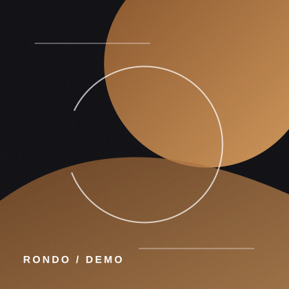
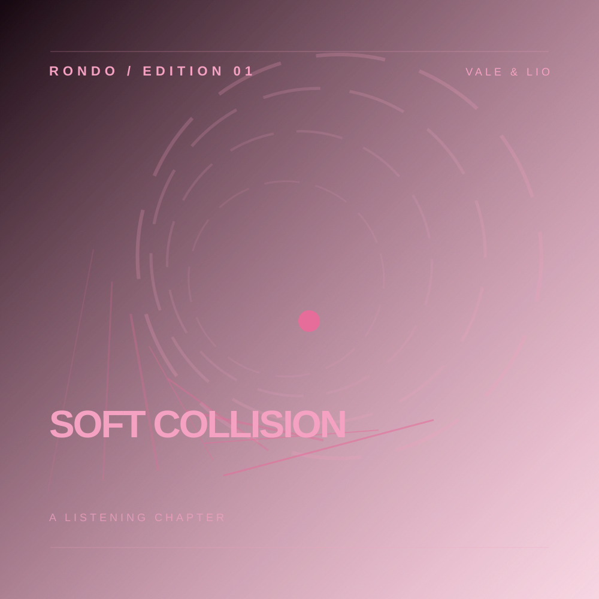
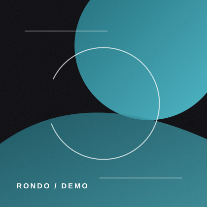
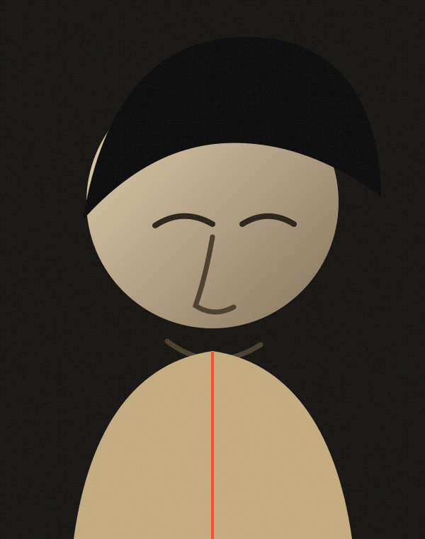

One good song first
Onboarding earns trust with an immediate listen—not a long survey.
Experience study 01
Design thesis
Rondo should feel open while you explore and disappear when you listen. Album art supplies emotion. The interface supplies clarity.
Onboarding earns trust with an immediate listen—not a long survey.
Track color reflects from artwork. It never floods the interface.
Covers, queues, and rooms transform from the thing you touched.
Interactive experience
Switch scenes to inspect the same system across onboarding, discovery, journeys, artists, and playback.
Welcome to Rondo
Start with someone you already love. We’ll learn from what you play—not from a personality test.
For Marco
Saturday evening

Picked from Asha North
Kairo Vale · 3:42
A little further out

Asha North

Mira Son

Nia Vale
Journey 01
R&B · 32 minutes
Five songs tracing the space between late-night soul and electronic R&B.


Artist
London · Alternative R&B
Start here
Silver Weather turns a restless night into something warm and close.
Latest release
Song Room
Headlights fold into the rain
Lyrics move with the songDesign system
The identity is not a collection of gradients. It is a consistent set of surfaces, states, geometry, and motion rules.
01 / Surface
Exploration is warm and tactile. Focused listening is deep and quiet.
02 / Signature
Playing
Selected
Following
Loading
03 / Voice
Instead ofCalibrate your listening journey
Rondo saysWhat sounds right today?
Instead ofGenerate personalized recommendations
Rondo saysMake my first mix
04 / Motion
05 / Trust
Saved music is still here.
Save something worth returning to.
Try loading the song again.
06 / Access
Desktop behavior
Desktop keeps discovery visible while the active recording opens as a focused listening space. It does not simply stretch the mobile layout.
Saturday evening
A little further out
Asha North turns a restless night into something warm and close.